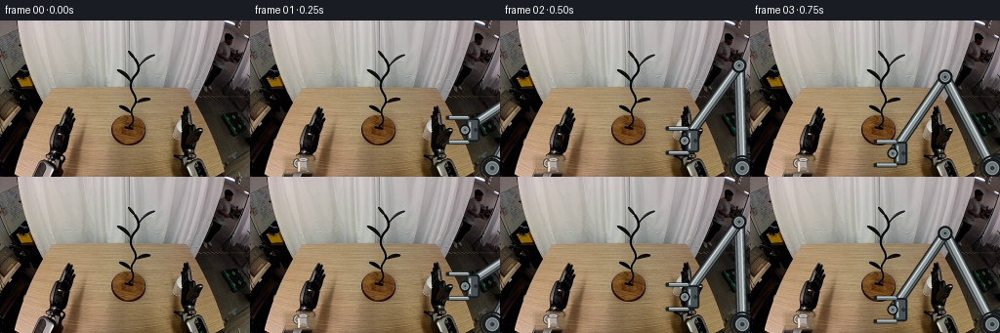
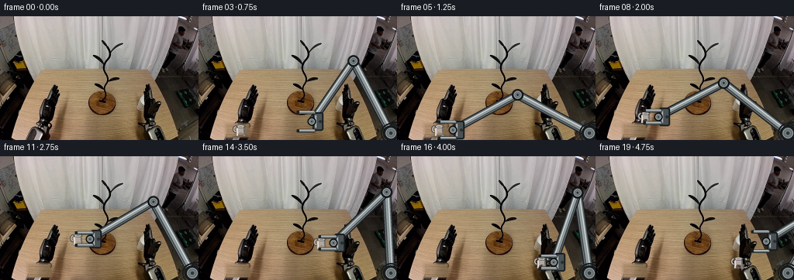
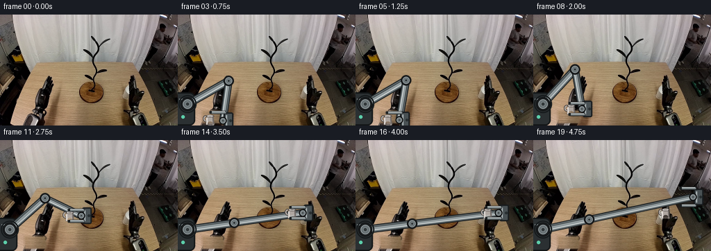
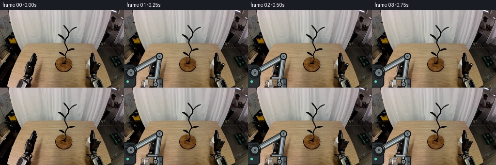
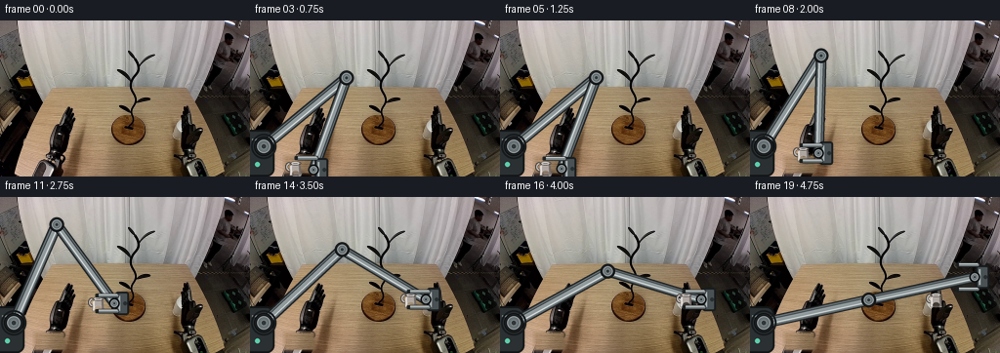
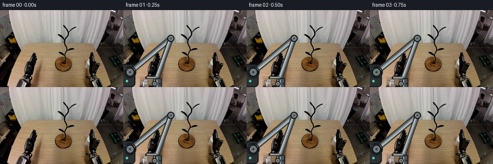
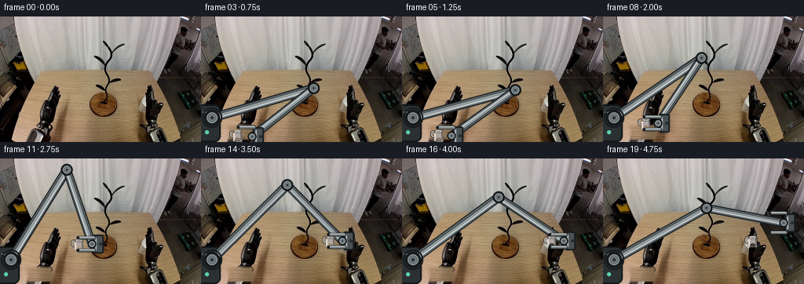
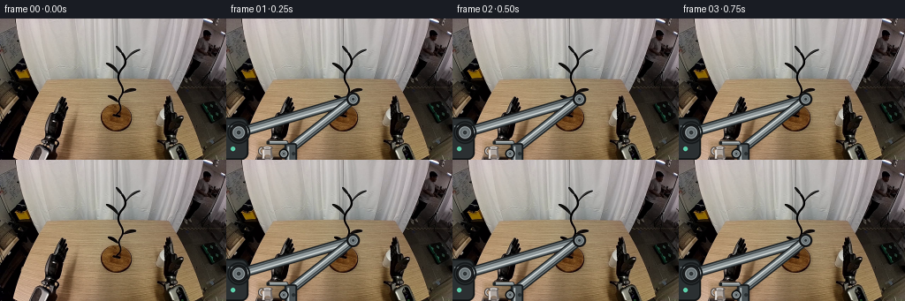
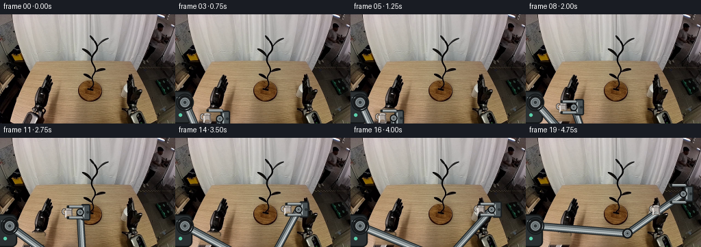

CODING AGENTS AS PIXEL WORLD MODELS
traex/DeepSeek-V4.1-Flash · common50_0032
点击播放 · 原生 RGB 像素
逐轮保存的候选
回放视频、检查图与代码变化。
每份候选均可单独播放。实际图片检查记录在下方工具轨迹中。
候选 01播放与检查图
点击播放 · 原生 RGB 像素


展开代码变化
--- 上一保存版本
+++ 本次保存版本
@@ -0,0 +1,377 @@
+"""Generate a 20-frame rigid robotic mug-transfer animation.
+
+The animation uses only the supplied first frame and local RGB operations. The
+robot links and gripper are rendered as rigid geometry; the mug sprite is copied
+without scaling or warping throughout the grasp.
+"""
+
+from pathlib import Path
+import math
+
+import numpy as np
+from PIL import Image, ImageDraw, ImageFilter
+
+import artifact_io
+
+
+ROOT = Path(__file__).resolve().parent
+WIDTH, HEIGHT, FRAME_COUNT = 256, 160, 20
+SS = 4 # supersampling for clean mechanical edges
+
+
+def ease_in_out(t):
+ t = float(np.clip(t, 0.0, 1.0))
+ return t * t * (3.0 - 2.0 * t)
+
+
+def lerp(a, b, t):
+ return a + (b - a) * t
+
+
+def smooth_path(points, frame):
+ """Interpolate a keyed polyline with smoothstep between keys."""
+ if frame <= points[0][0]:
+ return np.asarray(points[0][1], dtype=np.float64)
+ if frame >= points[-1][0]:
+ return np.asarray(points[-1][1], dtype=np.float64)
+ for (f0, p0), (f1, p1) in zip(points[:-1], points[1:]):
+ if f0 <= frame <= f1:
+ t = ease_in_out((frame - f0) / max(1, f1 - f0))
+ return np.asarray(p0, dtype=np.float64) * (1.0 - t) + np.asarray(
+ p1, dtype=np.float64
+ ) * t
+ return np.asarray(points[-1][1], dtype=np.float64)
+
+
+def solve_ik(shoulder, wrist, upper_len, fore_len, bend=1.0):
+ """Two-link IK returning a raised-elbow solution."""
+ shoulder = np.asarray(shoulder, dtype=np.float64)
+ wrist = np.asarray(wrist, dtype=np.float64)
+ delta = wrist - shoulder
+ distance = float(np.linalg.norm(delta))
+ distance = float(np.clip(distance, abs(upper_len - fore_len) + 1e-5,
+ upper_len + fore_len - 1e-5))
+ direction = delta / max(float(np.linalg.norm(delta)), 1e-9)
+ along = (upper_len**2 - fore_len**2 + distance**2) / (2.0 * distance)
+ height = math.sqrt(max(upper_len**2 - along**2, 0.0))
+ base = shoulder + direction * along
+ normal = np.array([-direction[1], direction[0]])
+ elbow = base + bend * height * normal
+ return elbow
+
+
+def clone_table_patch(base):
+ """Remove the original mug silhouette with nearby table texture."""
+ out = base.copy()
+ x0, x1 = 32, 70
+ y0, y1 = 136, HEIGHT
+ # A clean strip immediately to the right has the same perspective lighting.
+ patch = base[y0:y1, 92:130].copy()
+ h, w = patch.shape[:2]
+ yy, xx = np.mgrid[0:h, 0:w]
+ feather = np.minimum.reduce([
+ xx / 5.0,
+ (w - 1 - xx) / 5.0,
+ yy / 4.0,
+ (h - 1 - yy) / 4.0,
+ ])
+ feather = np.clip(feather, 0.0, 1.0)[..., None]
+ region = out[y0:y1, x0:x1].astype(np.float32)
+ blended = region * (1.0 - feather) + patch.astype(np.float32) * feather
+ out[y0:y1, x0:x1] = np.clip(blended, 0, 255).astype(np.uint8)
+
+ # Keep a narrow strip of the original table edge so the frame still reads as
+ # the same workspace.
+ out[157:160, 32:70] = (
+ out[157:160, 32:70].astype(np.float32) * 0.55
+ + base[157:160, 32:70].astype(np.float32) * 0.45
+ ).astype(np.uint8)
+ return out
+
+
+def make_mug_sprite():
+ """Render a rigid white ceramic mug at 4x and downsample once."""
+ sw, sh = 21, 20
+ canvas = Image.new("RGBA", (sw * SS, sh * SS), (0, 0, 0, 0))
+ d = ImageDraw.Draw(canvas)
+
+ def box(x0, y0, x1, y1):
+ return tuple(int(round(v * SS)) for v in (x0, y0, x1, y1))
+
+ # Handle first, so the body cleanly occludes its inner edge.
+ d.arc(box(0.0, 4.0, 9.0, 14.0), 92, 270, fill=(69, 63, 60, 255),
+ width=3 * SS)
+ d.arc(box(1.0, 5.0, 8.0, 13.0), 96, 266, fill=(188, 181, 175, 255),
+ width=int(1.5 * SS))
+
+ # Tapered ceramic body.
+ body = [
+ (6.0, 5.5), (15.0, 5.5), (16.4, 18.0),
+ (4.6, 18.0), (5.0, 9.0),
+ ]
+ d.polygon([(int(round(x * SS)), int(round(y * SS))) for x, y in body],
+ fill=(174, 166, 160, 255), outline=(64, 59, 57, 255))
+ d.line([(5.8 * SS, 8 * SS), (6.2 * SS, 17 * SS)],
+ fill=(225, 219, 214, 255), width=2 * SS)
+ d.line([(14.6 * SS, 7 * SS), (15.4 * SS, 17 * SS)],
+ fill=(111, 104, 101, 255), width=2 * SS)
+
+ # Warm reflected light from the wooden table.
+ d.ellipse(box(7.0, 13.0, 14.0, 18.2), fill=(188, 173, 161, 85))
+ d.line([(7.0 * SS, 17.0 * SS), (14.0 * SS, 17.0 * SS)],
+ fill=(96, 87, 81, 255), width=1 * SS)
+
+ # Rim and dark opening.
+ d.ellipse(box(4.7, 3.4, 16.2, 7.2), fill=(223, 217, 212, 255),
+ outline=(69, 64, 61, 255), width=1 * SS)
+ d.ellipse(box(6.1, 4.0, 14.7, 6.4), fill=(65, 58, 54, 255),
+ outline=(128, 119, 113, 255), width=1 * SS)
+ d.arc(box(6.2, 4.1, 14.6, 6.5), 188, 352, fill=(244, 239, 234, 255),
+ width=1 * SS)
+ d.line([(7.0 * SS, 6.0 * SS), (13.8 * SS, 6.0 * SS)],
+ fill=(238, 233, 228, 255), width=1 * SS)
+
+ return canvas.resize((sw, sh), Image.Resampling.LANCZOS)
+
+
+def draw_link(draw, p0, p1, width=8.0):
+ """Draw a rigid metallic link with outline, fill, and one highlight."""
+ p0 = np.asarray(p0, dtype=np.float64)
+ p1 = np.asarray(p1, dtype=np.float64)
+ delta = p1 - p0
+ length = max(float(np.linalg.norm(delta)), 1e-6)
+ normal = np.array([-delta[1], delta[0]]) / length
+ pts = [tuple((p * SS).round().astype(int)) for p in (p0, p1)]
+ w = int(round(width * SS))
+ outline = max(2, int(round(1.6 * SS)))
+ draw.line(pts, fill=(30, 34, 36, 255), width=w + 2 * outline,
+ joint="curve")
+ draw.line(pts, fill=(101, 111, 114, 255), width=w, joint="curve")
+ draw.line(pts, fill=(145, 154, 156, 255), width=max(1, w - 2 * outline),
+ joint="curve")
+
+ offset = normal * (width * 0.22)
+ hpts = [
+ tuple(((p + offset) * SS).round().astype(int)) for p in (p0, p1)
+ ]
+ draw.line(hpts, fill=(211, 216, 215, 255),
+ width=max(1, int(round(1.2 * SS))), joint="curve")
+ shadow = -normal * (width * 0.29)
+ spts = [
+ tuple(((p + shadow) * SS).round().astype(int)) for p in (p0, p1)
+ ]
+ draw.line(spts, fill=(53, 59, 61, 255),
+ width=max(1, int(round(1.0 * SS))), joint="curve")
+
+
+def draw_joint(draw, center, radius=7.0, base=False):
+ cx, cy = (np.asarray(center) * SS).round().astype(int)
+ ro = int(round(radius * SS))
+ draw.ellipse((cx - ro, cy - ro, cx + ro, cy + ro),
+ fill=(28, 31, 33, 255), outline=(13, 15, 16, 255),
+ width=max(1, int(round(1.0 * SS))))
+ ri = int(round(radius * 0.68 * SS))
+ draw.ellipse((cx - ri, cy - ri, cx + ri, cy + ri),
+ fill=(104, 113, 116, 255), outline=(172, 181, 182, 255),
+ width=max(1, int(round(0.8 * SS))))
+ rh = int(round(radius * 0.30 * SS))
+ draw.ellipse((cx - rh, cy - rh, cx + rh, cy + rh),
+ fill=(49, 55, 57, 255), outline=(135, 144, 146, 255),
+ width=max(1, int(round(0.7 * SS))))
+ if base:
+ rr = int(round(radius * 1.30 * SS))
+ draw.ellipse((cx - rr, cy - rr, cx + rr, cy + rr),
+ outline=(23, 27, 29, 255),
+ width=max(1, int(round(2.0 * SS))))
+
+
+def draw_arm(palm, elbow, shoulder, closedness):
+ """Return rear arm and front gripper overlays in final-frame coordinates."""
+ rear = Image.new("RGBA", (WIDTH * SS, HEIGHT * SS), (0, 0, 0, 0))
+ d = ImageDraw.Draw(rear)
+
+ # Fixed base housing at the right edge.
+ base_box = (246 * SS, 136 * SS, 268 * SS, 170 * SS)
+ d.rounded_rectangle(base_box, radius=8 * SS, fill=(43, 48, 50, 255),
+ outline=(18, 21, 22, 255), width=2 * SS)
+ d.line([(248 * SS, 145 * SS), (264 * SS, 145 * SS)],
+ fill=(128, 137, 139, 255), width=2 * SS)
+ d.ellipse((250 * SS, 151 * SS, 255 * SS, 156 * SS),
+ fill=(92, 206, 170, 255))
+
+ draw_link(d, shoulder, elbow, width=9.0)
+ draw_link(d, elbow, palm, width=8.0)
+ draw_joint(d, shoulder, radius=10.0, base=True)
+ draw_joint(d, elbow, radius=7.5)
+
+ # Palm body stays rigid behind the mug.
+ px, py = palm
+ palm_box = (
+ (px + 1) * SS, (py - 12) * SS,
+ (px + 15) * SS, (py + 12) * SS,
+ )
+ d.rounded_rectangle(palm_box, radius=3 * SS, fill=(73, 81, 84, 255),
+ outline=(24, 28, 30, 255), width=2 * SS)
+ d.line([((px + 5) * SS, (py - 8) * SS),
+ ((px + 5) * SS, (py + 8) * SS)],
+ fill=(168, 177, 178, 255), width=2 * SS)
+ d.ellipse(((px + 9) * SS, (py - 2) * SS,
+ (px + 13) * SS, (py + 2) * SS),
+ fill=(41, 47, 49, 255))
+ draw_joint(d, palm, radius=5.5)
+
+ front = Image.new("RGBA", (WIDTH * SS, HEIGHT * SS), (0, 0, 0, 0))
+ f = ImageDraw.Draw(front)
+ gap = lerp(12.5, 8.0, closedness)
+ finger_tip = px - 18.0
+ for side in (-1.0, 1.0):
+ y = py + side * gap
+ # Dark outline, steel body, then a short edge highlight.
+ f.rounded_rectangle(
+ (finger_tip * SS, (y - 2.3) * SS, (px + 5) * SS, (y + 2.3) * SS),
+ radius=2 * SS, fill=(29, 33, 35, 255),
+ )
+ f.rounded_rectangle(
+ ((finger_tip + 0.7) * SS, (y - 1.35) * SS,
+ (px + 4.2) * SS, (y + 1.35) * SS),
+ radius=1 * SS, fill=(121, 130, 132, 255),
+ )
+ f.line([((finger_tip + 2) * SS, (y - 1.1) * SS),
+ ((px + 3) * SS, (y - 1.1) * SS)],
+ fill=(214, 219, 218, 255), width=1 * SS)
+ # Rubber contact pad.
+ f.rounded_rectangle(
+ ((finger_tip - 1.5) * SS, (y - 1.9) * SS,
+ (finger_tip + 1.8) * SS, (y + 1.9) * SS),
+ radius=1 * SS, fill=(25, 29, 30, 255),
+ )
+ return rear.resize((WIDTH, HEIGHT), Image.Resampling.LANCZOS), \
+ front.resize((WIDTH, HEIGHT), Image.Resampling.LANCZOS)
+
+
+def add_shadow(frame, mug_center, held, on_target):
+ """Add a soft contact/projection shadow without changing the mug."""
+ shadow = Image.new("RGBA", (WIDTH, HEIGHT), (0, 0, 0, 0))
+ d = ImageDraw.Draw(shadow)
+ cx, cy = mug_center
+ if not held:
+ alpha = 78
+ y = 157
+ width = 22
+ else:
+ alpha = 34
+ y = 158
+ width = 17
+ if on_target:
+ alpha = 52
+ y = 149
+ width = 20
+ d.ellipse((cx - width / 2, y - 2.4, cx + width / 2, y + 2.4),
+ fill=(18, 12, 9, alpha))
+ shadow = shadow.filter(ImageFilter.GaussianBlur(1.25))
+ return Image.alpha_composite(frame.convert("RGBA"), shadow).convert("RGB")
+
+
+def main():
+ first = np.asarray(Image.open(ROOT / "first_frame.png").convert("RGB"))
+ assert first.shape == (HEIGHT, WIDTH, 3), first.shape
+
+ clean = clone_table_patch(first)
+ mug = make_mug_sprite()
+ mug_w, mug_h = mug.size
+
+ # Wrist/palm target. The mug center is 16 px to the left of the palm.
+ wrist_keys = [
+ (1, (220.0, 112.0)),
+ (2, (189.0, 123.0)),
+ (3, (146.0, 136.0)),
+ (4, (104.0, 145.0)),
+ (5, (72.0, 147.0)),
+ (6, (72.0, 147.0)),
+ (7, (75.0, 140.0)),
+ (8, (81.0, 130.0)),
+ (9, (90.0, 120.0)),
+ (10, (101.0, 112.0)),
+ (11, (116.0, 107.0)),
+ (12, (135.0, 104.0)),
+ (13, (155.0, 105.0)),
+ (14, (174.0, 112.0)),
+ (15, (190.0, 124.0)),
+ (16, (202.0, 137.0)),
+ (17, (202.0, 137.0)),
+ (18, (207.0, 125.0)),
+ (19, (220.0, 110.0)),
+ ]
+ source_center = np.array([54.0, 147.0])
+ target_center = np.array([184.0, 137.0])
+ shoulder = np.array([248.0, 151.0])
+ upper_len, fore_len = 105.0, 95.0
+
+ frames = []
+ centers = []
+ for index in range(FRAME_COUNT):
+ if index == 0:
+ frames.append(first.copy())
+ centers.append(source_center.copy())
+ continue
+
+ wrist = smooth_path(wrist_keys, index)
+ held = 7 <= index <= 17
+ if held:
+ mug_center = wrist - np.array([16.0, 0.0])
+ elif index >= 18:
+ mug_center = target_center.copy()
+ else:
+ mug_center = source_center.copy()
+
+ closedness = 0.0
+ if 2 <= index <= 5:
+ closedness = 0.45 * ease_in_out((index - 2) / 3.0)
+ elif 6 <= index <= 17:
+ closedness = 1.0
+ elif index >= 18:
+ closedness = max(0.0, 1.0 - ease_in_out((index - 17) / 2.0))
+
+ frame = Image.fromarray(clean.copy()).convert("RGBA")
+ frame = add_shadow(frame, mug_center, held, index >= 16).convert("RGBA")
+
+ elbow = solve_ik(shoulder, wrist, upper_len, fore_len, bend=1.0)
+ rear, front = draw_arm(wrist, elbow, shoulder, closedness)
+ frame = Image.alpha_composite(frame, rear)
+
+ # Rigid sprite placement: integer anchor, no scale or rotation.
+ mx = int(round(mug_center[0] - mug_w / 2))
+ my = int(round(mug_center[1] - mug_h / 2))
+ frame.alpha_composite(mug, (mx, my))
+ frame = Image.alpha_composite(frame, front)
+
+ # A restrained warm rim light helps the gripper read against the table.
+ frames.append(np.asarray(frame.convert("RGB"), dtype=np.uint8))
+ centers.append(np.asarray(mug_center, dtype=np.float64))
+
+ frames = np.stack(frames, axis=0).astype(np.uint8)
+ assert np.array_equal(frames[0], first)
+ artifact_io.save(frames, ROOT)
+
+ # Local inspection artifacts for regeneration and sanity checks.
+ from PIL import ImageDraw
+
+ sheet = Image.new("RGB", (WIDTH * 4, (HEIGHT + 18) * 5), (19, 23, 27))
+ sd = ImageDraw.Draw(sheet)
+ for slot, idx in enumerate(np.linspace(0, FRAME_COUNT - 1, 20).round().astype(int)):
+ row, col = divmod(slot, 4)
+ x, y = col * WIDTH, row * (HEIGHT + 18)
+ sd.text((x + 4, y + 3), f"{idx:02d} {idx / 4:.2f}s", fill=(230, 235, 236))
+ sheet.paste(Image.fromarray(frames[idx]), (x, y + 18))
+ sheet.save(ROOT / "motion_debug.png")
+
+ delta = np.abs(frames.astype(np.int16) - first[None].astype(np.int16)).mean(
+ axis=(1, 2, 3)
+ )
+ print("frames", frames.shape, frames.dtype)
+ print("mean RGB delta by frame:", np.round(delta, 2).tolist())
+ print("mug centers:", [(round(float(x), 1), round(float(y), 1)) for x, y in centers])
+
+
+if __name__ == "__main__":
+ main()
候选 02播放与检查图
点击播放 · 原生 RGB 像素

展开代码变化
--- 上一保存版本
+++ 本次保存版本
@@ -190,13 +190,13 @@
rear = Image.new("RGBA", (WIDTH * SS, HEIGHT * SS), (0, 0, 0, 0))
d = ImageDraw.Draw(rear)
- # Fixed base housing at the right edge.
- base_box = (246 * SS, 136 * SS, 268 * SS, 170 * SS)
+ # Fixed base housing at the left edge.
+ base_box = (-8 * SS, 112 * SS, 25 * SS, 160 * SS)
d.rounded_rectangle(base_box, radius=8 * SS, fill=(43, 48, 50, 255),
outline=(18, 21, 22, 255), width=2 * SS)
- d.line([(248 * SS, 145 * SS), (264 * SS, 145 * SS)],
+ d.line([(2 * SS, 122 * SS), (21 * SS, 122 * SS)],
fill=(128, 137, 139, 255), width=2 * SS)
- d.ellipse((250 * SS, 151 * SS, 255 * SS, 156 * SS),
+ d.ellipse((5 * SS, 145 * SS, 10 * SS, 150 * SS),
fill=(92, 206, 170, 255))
draw_link(d, shoulder, elbow, width=9.0)
@@ -282,30 +282,30 @@
# Wrist/palm target. The mug center is 16 px to the left of the palm.
wrist_keys = [
- (1, (220.0, 112.0)),
- (2, (189.0, 123.0)),
- (3, (146.0, 136.0)),
- (4, (104.0, 145.0)),
- (5, (72.0, 147.0)),
- (6, (72.0, 147.0)),
- (7, (75.0, 140.0)),
- (8, (81.0, 130.0)),
- (9, (90.0, 120.0)),
- (10, (101.0, 112.0)),
- (11, (116.0, 107.0)),
- (12, (135.0, 104.0)),
- (13, (155.0, 105.0)),
- (14, (174.0, 112.0)),
- (15, (190.0, 124.0)),
- (16, (202.0, 137.0)),
- (17, (202.0, 137.0)),
- (18, (207.0, 125.0)),
- (19, (220.0, 110.0)),
+ (1, (65.0, 153.0)),
+ (2, (65.0, 153.0)),
+ (3, (65.0, 153.0)),
+ (4, (64.0, 152.0)),
+ (5, (63.0, 152.0)),
+ (6, (62.0, 152.0)),
+ (7, (63.0, 146.0)),
+ (8, (70.0, 136.0)),
+ (9, (82.0, 125.0)),
+ (10, (98.0, 116.0)),
+ (11, (117.0, 109.0)),
+ (12, (138.0, 105.0)),
+ (13, (160.0, 104.0)),
+ (14, (180.0, 105.0)),
+ (15, (196.0, 106.0)),
+ (16, (206.0, 105.0)),
+ (17, (206.0, 105.0)),
+ (18, (216.0, 96.0)),
+ (19, (230.0, 82.0)),
]
- source_center = np.array([54.0, 147.0])
- target_center = np.array([184.0, 137.0])
- shoulder = np.array([248.0, 151.0])
- upper_len, fore_len = 105.0, 95.0
+ source_center = np.array([46.0, 151.0])
+ target_center = np.array([190.0, 105.0])
+ shoulder = np.array([14.0, 129.0])
+ upper_len, fore_len = 102.0, 94.0
frames = []
centers = []
候选 03播放与检查图
候选 04播放与检查图
点击播放 · 原生 RGB 像素


展开代码变化
--- 上一保存版本
+++ 本次保存版本
@@ -305,7 +305,7 @@
source_center = np.array([46.0, 151.0])
target_center = np.array([190.0, 105.0])
shoulder = np.array([14.0, 129.0])
- upper_len, fore_len = 102.0, 94.0
+ upper_len, fore_len = 68.0, 58.0
frames = []
centers = []
@@ -335,7 +335,7 @@
frame = Image.fromarray(clean.copy()).convert("RGBA")
frame = add_shadow(frame, mug_center, held, index >= 16).convert("RGBA")
- elbow = solve_ik(shoulder, wrist, upper_len, fore_len, bend=1.0)
+ elbow = solve_ik(shoulder, wrist, upper_len, fore_len, bend=-1.0)
rear, front = draw_arm(wrist, elbow, shoulder, closedness)
frame = Image.alpha_composite(frame, rear)
候选 05播放与检查图
点击播放 · 原生 RGB 像素


展开代码变化
--- 上一保存版本
+++ 本次保存版本
@@ -305,7 +305,7 @@
source_center = np.array([46.0, 151.0])
target_center = np.array([190.0, 105.0])
shoulder = np.array([14.0, 129.0])
- upper_len, fore_len = 68.0, 58.0
+ upper_len, fore_len = 110.0, 100.0
frames = []
centers = []
候选 06播放与检查图
点击播放 · 原生 RGB 像素


展开代码变化
--- 上一保存版本
+++ 本次保存版本
@@ -305,7 +305,7 @@
source_center = np.array([46.0, 151.0])
target_center = np.array([190.0, 105.0])
shoulder = np.array([14.0, 129.0])
- upper_len, fore_len = 110.0, 100.0
+ upper_len, fore_len = 135.0, 100.0
frames = []
centers = []
候选 07播放与检查图
点击播放 · 原生 RGB 像素

展开代码变化
--- 上一保存版本
+++ 本次保存版本
@@ -335,7 +335,7 @@
frame = Image.fromarray(clean.copy()).convert("RGBA")
frame = add_shadow(frame, mug_center, held, index >= 16).convert("RGBA")
- elbow = solve_ik(shoulder, wrist, upper_len, fore_len, bend=-1.0)
+ elbow = solve_ik(shoulder, wrist, upper_len, fore_len, bend=1.0)
rear, front = draw_arm(wrist, elbow, shoulder, closedness)
frame = Image.alpha_composite(frame, rear)
可观测工具轨迹
实际执行的命令与返回图片。
命令 1exit 0
/bin/bash -c "pwd && rg --files -g '"'!**/.git/**'"' | sed -n '1,200p'"
命令 2exit 0
/bin/bash -c "printf '%s\\n' '--- prompt.txt ---'; cat prompt.txt; printf '%s\\n' '--- GENERATION_RULES.md ---'; cat GENERATION_RULES.md"
命令 3exit 0
/bin/bash -c 'file first_frame.png && identify first_frame.png 2>/dev/null || true; command -v ffmpeg; command -v ffprobe; command -v python3'
命令 4exit 0
/bin/bash -c 'cat task_spec.json'
命令 5exit 0
/bin/bash -c "sed -n '1,260p' artifact_io.py"
命令 6exit 0
/bin/bash -c "sed -n '1,260p' player_template.html"
命令 7exit 0
/bin/bash -c "python3 - <<'PY'
from PIL import Image
import numpy as np
im=Image.open('first_frame.png').convert('RGB')
a=np.array(im)
print('shape',a.shape)
# common colors exact
u,c=np.unique(a.reshape(-1,3),axis=0,return_counts=True)
for i in np.argsort(c)[-30:][::-1]: print(tuple(u[i]),int(c[i]))
# luminance ascii 64x40 with block averages
lum=(0.2126*a[:,:,0]+0.7152*a[:,:,1]+0.0722*a[:,:,2])
chars=' .:-=+*#%@'
for y in range(40):
row=''
for x in range(64):
v=lum[int(y*4):int(y*4+4),int(x*4):int(x*4+4)].mean()
row+=chars[min(9,int(v/25.6))]
print(row)
PY"命令 8exit 0
/bin/bash -c "python3 - <<'PY'
try:
import cv2; print('cv2',cv2.__version__)
except Exception as e: print('no cv2',e)
try:
import scipy; print('scipy',scipy.__version__)
except Exception as e: print('no scipy',e)
PY"命令 9exit 0
/bin/bash -c "python3 - <<'PY'
from PIL import Image
import numpy as np
a=np.array(Image.open('first_frame.png').convert('RGB')).astype(float)
# 8x8 grid avg RGB
for y in range(0,160,10):
print('y%03d'%y, end=' ')
for x in range(0,256,16):
c=a[y:y+10,x:x+16].mean((0,1)).astype(int)
print('%02x%02x%02x'%tuple(c),end=' ')
print()
PY"命令 10exit 0
/bin/bash -c "python3 - <<'PY'
import cv2, numpy as np
from PIL import Image
im=np.array(Image.open('first_frame.png').convert('RGB'))
# kmeans 12
Z=im.reshape(-1,3).astype(np.float32)
crit=(cv2.TERM_CRITERIA_EPS+cv2.TERM_CRITERIA_MAX_ITER,100,0.2)
_,lab,cen=cv2.kmeans(Z,14,None,crit,10,cv2.KMEANS_PP_CENTERS)
cen=cen.astype(int)
counts=np.bincount(lab.ravel())
for i in np.argsort(counts)[::-1]:
m=(lab.reshape(im.shape[:2])==i).astype(np.uint8)
ys,xs=np.where(m)
print(i,counts[i],cen[i], 'bbox',xs.min(),ys.min(),xs.max(),ys.max())
# Save cluster montage labeled via digits ascii? Quant map chars by rank brightness/sat
order=np.argsort(counts)[::-1]
chars='0123456789ABCD'
qm=np.zeros(im.shape[:2],dtype='<U1')
for j,i in enumerate(order): qm[lab.reshape(im.shape[:2])==i]=chars[j]
# downsample mode-ish using first
for y in range(0,160,2):
print(''.join(qm[y,x] for x in range(0,256,2)))
PY"命令 11exit 0
/bin/bash -c "python3 - <<'PY'
from PIL import Image
import numpy as np, cv2
a=np.array(Image.open('first_frame.png').convert('RGB')).astype(float)
r,g,b=a[...,0],a[...,1],a[...,2]; mx=a.max(2); mn=a.min(2); lum=a.mean(2); sat=(mx-mn)/(mx+1e-6)
# categories
cat=np.full(lum.shape,' ',dtype='<U1')
cat[(lum<35)]='#' # black
cat[(lum>=35)&(lum<80)&(sat<.2)]='d' # dark grey
cat[(lum>=80)&(lum<150)&(sat<.14)]='m' # metal
cat[(lum>=150)&(sat<.10)]='W' # white/grey bright
cat[(sat>=.14)&(r>g)&(g>b)]='b' # brown table
cat[(sat>=.14)&(r>g*1.1)&(g>b*1.05)&(lum>100)]='o' # warm wood
# print 2x2 majority? select center pixel and maybe bright max
for y in range(54,160,2):
row=''
for x in range(0,256,2):
block=cat[y:y+2,x:x+2].ravel()
vals,c=np.unique(block,return_counts=True)
row+=vals[np.argmax(c)]
print('%3d '%y+row)
PY"命令 12exit 0
/bin/bash -c "python3 - <<'PY'
from PIL import Image
im=Image.open('first_frame.png').convert('RGB')
# make 4x nearest crop views using only rgb ops
regions={'left':(0,0,140,160),'right':(120,0,256,160),'top':(0,0,256,100),'bottom':(0,65,256,160)}
for name,box in regions.items():
c=im.crop(box)
scale=3 if name in ('left','right') else 2
c.resize((c.width*scale,c.height*scale),Image.Resampling.NEAREST).save(f'crop_{name}.png')
PY"命令 13exit 0
/bin/bash -c "python3 - <<'PY'
import cv2,numpy as np
from PIL import Image
a=np.array(Image.open('first_frame.png').convert('RGB'))
# edge map with ascii threshold
g=cv2.cvtColor(a,cv2.COLOR_RGB2GRAY)
e=cv2.Canny(g,40,100)
for y in range(50,160,2):
print('%3d '%y+''.join('#' if e[y:y+2,x:x+2].any() else ' ' for x in range(0,256,2)))
PY"命令 14exit 0
/bin/bash -c "python3 - <<'PY'
import cv2,numpy as np
from PIL import Image
a=np.array(Image.open('first_frame.png').convert('RGB'))
r,g,b=a.transpose(2,0,1).astype(float); mx=a.max(2); mn=a.min(2); lum=a.mean(2); sat=(mx-mn)/(mx+1)
# masks lower scene
for name,m in [
('bright_low',(lum>130)&(sat<.18)),
('white_low',(lum>155)&(sat<.10)),
('dark_low',(lum<45)),
('dark_sat',(lum<70)&(sat<.30)),
('gray_low',(lum>70)&(lum<155)&(sat<.12)),
('brown_low',(r>g*1.12)&(g>b*1.08)&(lum>70)),
]:
mm=(m.astype(np.uint8)); mm[:66]=0
n,lab,stats,cen=cv2.connectedComponentsWithStats(mm,8)
comps=[]
for i in range(1,n):
x,y,w,h,area=stats[i]
if area>=8: comps.append((area,x,y,w,h))
print('\\n',name,'total',int(mm.sum()),'comps',sorted(comps,reverse=True)[:30])
PY"命令 15exit 0
/bin/bash -c "python3 - <<'PY'
from PIL import Image
import numpy as np
a=np.array(Image.open('first_frame.png').convert('RGB')).astype(float)
# print high-res color-coded selected crops 80-200 x 90-160, 1 pixel per char using symbol categories
chars={'bright':'@','dark':'#','wood':'w','gray':'m','mid':'+','black':'.'}
for y in range(90,160):
row=''
for x in range(80,205):
r,g,b=a[y,x]; l=(r+g+b)/3; sat=(max(r,g,b)-min(r,g,b))/(max(r,g,b)+1)
if l>160 and sat<.13: ch='@'
elif l<35: ch='#'
elif l>80 and sat<.15: ch='m'
elif r>g*1.12 and g>b*1.06 and l>70: ch='w'
elif l<70: ch='.'
else: ch='+'
row+=ch
print('%3d '%y+row)
PY"命令 16exit 0
/bin/bash -c "python3 - <<'PY'
import numpy as np
from PIL import Image
import cv2
a=np.array(Image.open('first_frame.png').convert('RGB'))
# Quantize and inspect exact region stats, bright components
for box in [(175,80,205,125),(180,95,200,120),(45,90,75,130),(25,130,65,160),(185,135,210,160),(10,120,70,160),(120,125,165,160),(120,85,155,130),(0,50,90,160),(150,55,210,90)]:
x0,y0,x1,y1=box; crop=a[y0:y1,x0:x1]
print('\\nbox',box,'mean',crop.mean((0,1)).astype(int),'min',crop.min((0,1)),'max',crop.max((0,1)))
# brightness top pixel coords
l=crop.mean(2); ys,xs=np.where(l>max(130,l.max()-20)); print('bright n',len(xs),'bbox local', (xs.min(),ys.min(),xs.max(),ys.max()) if len(xs) else None)
PY"命令 17exit 0
/bin/bash -c "python3 - <<'PY'
from PIL import Image
import numpy as np
a=np.array(Image.open('first_frame.png').convert('RGB')).astype(float)
# color map for whole 256x160 at 1 char per 1 pixel using hue groups, print every row
for y in range(64,160):
row=''
for x in range(0,256,2):
p=a[y:y+2,x:x+2].mean((0,1)); r,g,b=p; mx=max(p); mn=min(p); s=(mx-mn)/(mx+1e-6); l=p.mean()
if l<22: ch='#'
elif l<50: ch='.'
elif s<.08 and l>145: ch='@'
elif s<.12 and l>85: ch='m'
elif s<.18 and l>135: ch='W'
elif r>g*1.08 and g>b*1.04 and l>80: ch='w'
elif l>125: ch='o'
else: ch='+'
row+=ch
print('%03d '%y+row)
PY"命令 18exit 0
/bin/bash -c "python3 - <<'PY'
from PIL import Image
im=Image.open('first_frame.png')
print(im.info)
PY"命令 19exit 0
/bin/bash -c "python3 - <<'PY'
from PIL import Image
import numpy as np
a=np.array(Image.open('first_frame.png').convert('RGB')).astype(float)
l=a.mean(2)
for y in range(58,160):
row=''
for x in range(0,256):
if l[y,x]<30: c='#'
elif l[y,x]<55: c='O'
elif l[y,x]<85: c='o'
elif l[y,x]<120: c='+'
elif l[y,x]<160: c='.'
else: c=' '
row+=c
print('%03d '%y+row)
PY"命令 20exit 0
/bin/bash -c "python3 - <<'PY'
from PIL import Image
import numpy as np
a=np.array(Image.open('first_frame.png').convert('RGB')).astype(float)
# ascii for x=150..220 y=64..160 with RGB average and saturation category every pixel
for y in range(64,160):
row=''
for x in range(150,221):
r,g,b=a[y,x]; l=(r+g+b)/3; s=(max(r,g,b)-min(r,g,b))/(max(r,g,b)+1e-6)
if l<18: ch='#'
elif l<35: ch='@'
elif l<55: ch='O'
elif l<80: ch='o'
elif l<105: ch='+'
elif l<130: ch='.'
elif l<160: ch=' '
elif s<.10: ch='W'
else: ch='*'
row+=ch
print('%03d '%y+row)
PY"命令 21exit 0
/bin/bash -c "python3 - <<'PY'
from PIL import Image
im=Image.open('first_frame.png').convert('RGB')
# make crop exact for easier coordinates and 1-pixel grid labels separately maybe
for name,box,scale in [('scene',(0,0,256,160),3),('leftgrip',(20,120,80,160),8),('mug',(25,135,65,160),10),('stand',(175,90,215,160),8),('topleft',(0,50,80,120),6)]:
c=im.crop(box); c.resize((c.width*scale,c.height*scale),Image.Resampling.NEAREST).save('zoom_'+name+'.png')
PY"命令 22exit 0
/bin/bash -c "python3 - <<'PY'
import numpy as np, cv2
from PIL import Image
a=np.array(Image.open('first_frame.png').convert('RGB'))
# contour hierarchy of dark pixels in x20:80 y110:160 and x170:220 y70:160
for name,(x0,y0,x1,y1) in [('left',(20,110,85,160)),('right',(170,70,220,160)),('mug',(25,135,70,160))]:
crop=a[y0:y1,x0:x1]; l=crop.mean(2)
print('\\n',name)
for th in [20,35,50,70,90]:
m=(l<th).astype(np.uint8)
n,lab,stats,cen=cv2.connectedComponentsWithStats(m,8)
comps=sorted([(stats[i,4],tuple(stats[i,:4])) for i in range(1,n)],reverse=True)[:10]
print('th',th,comps)
PY"命令 23exit 0
/bin/bash -c "python3 - <<'PY'
from PIL import Image
import numpy as np
a=np.array(Image.open('first_frame.png').convert('RGB')).astype(float)
# print dark pixel counts per x/y in lower half to identify robot dark shapes
l=a.mean(2)
for th in [35,55,80,110]:
print('\\nth',th)
for y in range(60,160,4):
xs=np.where(l[y:y+4].min(0)<th)[0]
# runs
runs=[]
if len(xs):
st=xs[0]; prev=xs[0]
for x in xs[1:]:
if x>prev+1: runs.append((int(st),int(prev))); st=x
prev=x
runs.append((int(st),int(prev)))
print('%3d'%y,runs)
PY"命令 24exit 0
/bin/bash -c "python3 - <<'PY'
from PIL import Image
import numpy as np
a=np.array(Image.open('first_frame.png').convert('RGB')).astype(float)
# identify white mug cluster around x35-47 y140-160
for y in range(132,160):
row=''
for x in range(28,60):
r,g,b=a[y,x]; l=(r+g+b)/3; s=(max(r,g,b)-min(r,g,b))/(max(r,g,b)+1)
if l>180 and s<.1: ch='W'
elif l>130 and s<.15: ch='w'
elif l>90: ch='+'
elif l>50: ch='.'
else: ch='#'
row+=ch
print('%3d '%y+row)
PY"命令 25exit 0
/bin/bash -c "python3 - <<'PY'
from PIL import Image
import numpy as np
a=np.array(Image.open('first_frame.png').convert('RGB')).astype(float)
# Search for cup-like bright shapes in whole image via local stats. report connected comps threshold and avg region.
l=a.mean(2); s=(a.max(2)-a.min(2))/(a.max(2)+1e-6)
for box in [(0,0,256,70),(0,60,256,160)]:
x0,y0,x1,y1=box
for th in [120,140,160,180]:
m=((l>th)&(s<.18)).astype(np.uint8); m[:y0]=0;m[y1:]=0;m[:,:x0]=0;m[:,x1:]=0
import cv2
n,lab,st,ce=cv2.connectedComponentsWithStats(m,8)
comps=sorted([(int(st[i,4]),tuple(map(int,st[i,:4]))) for i in range(1,n)],reverse=True)[:15]
print(box,'th',th,comps)
PY"命令 26exit 0
/bin/bash -c "python3 - <<'PY'
import numpy as np
from PIL import Image
a=np.array(Image.open('first_frame.png').convert('RGB')).astype(float)
for box in [(35,140,57,160),(35,145,57,160),(37,147,56,160),(40,140,65,160),(25,130,65,160)]:
x0,y0,x1,y1=box; c=a[y0:y1,x0:x1]; l=c.mean(2); mx=c.max(2);mn=c.min(2);s=(mx-mn)/(mx+1e-6)
print(box,'l mean/med/max',l.mean(),np.median(l),l.max(),'sat',s.mean(),'bright>100',int((l>100).sum()),'>140',int((l>140).sum()))
# per row bright bbox
for yy in range(y1-y0):
xs=np.where(l[yy]>100)[0]
if len(xs): print(y0+yy, x0+xs.min(),x0+xs.max(),len(xs),end='; ')
print()
PY"命令 27exit 0
/bin/bash -c "python3 - <<'PY'
from PIL import Image
import numpy as np
a=np.array(Image.open('first_frame.png').convert('RGB')).astype(float)
# print RGB hex for x=40..60 y=144..160
for y in range(144,160):
print(y,' '.join('%02x%02x%02x'%tuple(a[y,x].astype(int)) for x in range(38,60)))
PY"命令 28exit 0
/bin/bash -c "python3 - <<'PY'
from PIL import Image
import numpy as np
a=np.array(Image.open('first_frame.png').convert('RGB')).astype(float)
# map of likely gripper metal: local gray pixels around left/right hand
for name,(x0,y0,x1,y1) in [('left',(20,90,90,160)),('right',(165,80,220,160)),('mug',(35,130,65,160))]:
print('\\n',name)
l=a.mean(2);s=(a.max(2)-a.min(2))/(a.max(2)+1e-6)
for y in range(y0,y1):
row=''
for x in range(x0,x1):
if l[y,x]>105 and s[y,x]<.12: ch='M'
elif l[y,x]>70 and s[y,x]<.15: ch='m'
elif l[y,x]>140 and s[y,x]<.25: ch='w'
elif l[y,x]<25: ch='#'
elif l[y,x]<50: ch='.'
else: ch=' '
row+=ch
print('%3d '%y+row)
PY"命令 29exit 0
/bin/bash -c "python3 - <<'PY'
from PIL import Image
import numpy as np
a=np.array(Image.open('first_frame.png').convert('RGB')).astype(float)
# grayscale crop right stand x175-205 y95-160 values chars
for y in range(95,160):
row=''
for x in range(175,211):
l=a[y,x].mean(); s=(a[y,x].max()-a[y,x].min())/(a[y,x].max()+1e-6)
if l>150 and s<.18: ch='W'
elif l>110 and s<.18: ch='M'
elif l>75: ch='+'
elif l>50: ch='.'
elif l>25: ch='o'
else: ch='#'
row+=ch
print('%3d '%y+row)
PY"命令 30exit 0
/bin/bash -c "python3 - <<'PY'
from PIL import Image
im=Image.open('first_frame.png')
# 256x160 but use palette quantization for color reading? no visual tool available. Generate raw samples.
# print grayscale/color signature at key points
import numpy as np
a=np.array(im.convert('RGB'))
pts=[(40,145),(45,150),(48,153),(50,155),(52,157),(180,103),(181,110),(190,150),(195,155),(90,110),(100,110),(120,110),(130,110),(150,110),(170,110)]
for x,y in pts: print((x,y),tuple(a[y,x]))
PY"命令 31exit 0
/bin/bash -c "python3 - <<'PY'
from PIL import Image
import numpy as np
a=np.array(Image.open('first_frame.png').convert('RGB')).astype(int)
# Compute local complexity for block patches 8x8, likely arm/object regions
for y in range(60,160,8):
row=[]
for x in range(0,256,8):
p=a[y:y+8,x:x+8]; l=p.mean(2); std=l.std(); mean=l.mean(); sat=((p.max(2)-p.min(2))/(p.max(2)+1)).mean()
row.append('%02x%02x%02x/%1d%1d'%(int(p[:,:,0].mean()),int(p[:,:,1].mean()),int(p[:,:,2].mean()),min(9,int(std/10)),min(9,int(sat*10))))
print('%3d'%y,' '.join(row))
PY"命令 32exit 0
/bin/bash -c "python3 - <<'PY'
from PIL import Image
import numpy as np
a=np.array(Image.open('first_frame.png').convert('RGB')).astype(float)
# Identify metal arm: connected gray pixels around x100-150 y90-145, thresholds
for name,box in [('center',(80,80,170,160)),('armL',(90,90,150,145)),('leftarm',(0,50,90,160))]:
x0,y0,x1,y1=box; c=a[y0:y1,x0:x1]; l=c.mean(2);s=(c.max(2)-c.min(2))/(c.max(2)+1e-6)
for th in [60,80,100,120]:
m=((l>th)&(s<.10)).astype(np.uint8)
import cv2
n,lab,st,ce=cv2.connectedComponentsWithStats(m,8)
comps=sorted([(int(st[i,4]),tuple(map(int,st[i,:4]))) for i in range(1,n)],reverse=True)[:15]
print(name,'th',th,comps)
PY"命令 33exit 0
/bin/bash -c "python3 - <<'PY'
from PIL import Image
import numpy as np
a=np.array(Image.open('first_frame.png').convert('RGB')).astype(float)
# Sample exact RGB at 16x10 coarse, use dominant hue and brightness to infer foreground
for y in range(60,160,5):
print('%3d'%y,end=' ')
for x in range(0,256,5):
c=a[y:y+5,x:x+5].mean((0,1)).astype(int)
print('%02x%02x%02x'%tuple(c),end=' ')
print()
PY"命令 34exit 0
/bin/bash -c "python3 - <<'PY'
from PIL import Image
import numpy as np
a=np.array(Image.open('first_frame.png').convert('RGB')).astype(float)
l=a.mean(2); s=(a.max(2)-a.min(2))/(a.max(2)+1e-6)
for y in range(136,160):
row=''
for x in range(30,65):
if l[y,x]>150 and s[y,x]<.12: ch='@'
elif l[y,x]>100 and s[y,x]<.18: ch='M'
elif l[y,x]>70: ch='+'
elif l[y,x]>45: ch='.'
else: ch='#'
row+=ch
print('%3d '%y+row)
print('mask bbox')
m=(l>100)&(s<.2); ys,xs=np.where(m); print(xs.min(),xs.max(),ys.min(),ys.max())
# in crop
m2=m[136:160,30:65]; ys,xs=np.where(m2); print('crop',xs.min()+30,xs.max()+30,ys.min()+136,ys.max()+136)
PY"命令 35exit 0
/bin/bash -c "python3 - <<'PY'
from PIL import Image
import numpy as np
a=np.array(Image.open('first_frame.png').convert('RGB')).astype(float)
# find all regions with large area of low saturation bright pixels (mug, stand highlights)
l=a.mean(2); s=(a.max(2)-a.min(2))/(a.max(2)+1e-6)
for y in range(136,160):
row=''
for x in range(0,90):
if l[y,x]>120 and s[y,x]<.2: ch='@'
elif l[y,x]>80 and s[y,x]<.25: ch='M'
elif l[y,x]>55: ch='.'
else: ch='#'
row+=ch
print('%3d '%y+row)
PY"命令 36exit 1
/bin/bash -c 'python3 generate.py'
命令 37exit 0
/bin/bash -c 'python3 generate.py'
命令 38exit 0
/bin/bash -c "python3 - <<'PY'
from PIL import Image
import numpy as np, cv2
first=np.array(Image.open('first_frame.png').convert('RGB'))
for i in [0,1,4,6,7,10,13,16,17,18,19]:
a=np.array(Image.open(f'frames/{i:02d}.png').convert('RGB'))
diff=np.abs(a.astype(int)-first.astype(int)).sum(2)
ys,xs=np.where(diff>35)
print(i,'diff',round(diff.mean(),2),'bbox',None if len(xs)==0 else (int(xs.min()),int(ys.min()),int(xs.max()),int(ys.max())),'n',len(xs))
# connected comps >20 px
m=(diff>35).astype(np.uint8)
n,lab,st,ce=cv2.connectedComponentsWithStats(m,8)
comps=sorted([(int(st[j,4]),tuple(map(int,st[j,:4]))) for j in range(1,n)],reverse=True)[:8]
print(' ',comps)
PY"命令 39exit 0
/bin/bash -c "python3 - <<'PY'
from PIL import Image
import numpy as np
for i in [0,4,7,10,13,16,19]:
a=np.array(Image.open(f'frames/{i:02d}.png').convert('RGB'))
l=a.mean(2)
print('\\nFRAME',i)
for y in range(55,160,3):
row=''
for x in range(0,256,3):
p=a[y:y+3,x:x+3]; ll=p.mean(); sat=((p.max(2)-p.min(2))/(p.max(2)+1)).mean()
if ll>145 and sat<.12: ch='W'
elif ll>100 and sat<.13: ch='M'
elif ll<25: ch='#'
elif ll<55: ch='.'
elif p[:,:,0].mean()>p[:,:,1].mean()*1.1 and p[:,:,1].mean()>p[:,:,2].mean()*1.05: ch='w'
elif ll>110: ch='+'
else: ch=' '
row+=ch
print('%3d '%y+row)
PY"命令 40exit 0
/bin/bash -c "python3 - <<'PY'
from PIL import Image
import numpy as np
for i in [0,7,13,16,19]:
a=np.array(Image.open(f'frames/{i:02d}.png').convert('RGB')).astype(float)
# inspect mug sprite region expected at center from generator
centers={0:(54,147),7:(59,140),13:(139,105),16:(186,137),19:(184,137)}[i]
cx,cy=centers
print('\\nframe',i,'center',centers)
for y in range(max(0,int(cy-12)),min(160,int(cy+12))):
row=''
for x in range(max(0,int(cx-18)),min(256,int(cx+18))):
p=a[y,x];l=p.mean();s=(p.max()-p.min())/(p.max()+1)
if l>145 and s<.12: ch='W'
elif l>100 and s<.18: ch='M'
elif l>70: ch='+'
elif l>40: ch='.'
else: ch='#'
row+=ch
print('%3d '%y+row)
PY"命令 41exit 0
/bin/bash -c "python3 - <<'PY'
import numpy as np
from PIL import Image
for i in [7,10,13,16,18,19]:
a=np.array(Image.open(f'frames/{i:02d}.png').convert('RGB')).astype(float)
print('\\nframe',i)
# row summaries of low saturation bright in lower scene, connected comps
l=a.mean(2);s=(a.max(2)-a.min(2))/(a.max(2)+1e-6)
m=((l>115)&(s<.20)).astype(np.uint8);m[:85]=0
import cv2
n,lab,st,ce=cv2.connectedComponentsWithStats(m,8)
comps=sorted([(int(st[j,4]),tuple(map(int,st[j,:4]))) for j in range(1,n)],reverse=True)[:12]
print(comps)
PY"命令 42exit 0
/bin/bash -c "python3 - <<'PY'
from PIL import Image
import numpy as np
for i in [1,2,3,4,5,6,7,8,9,10,11,12,13,14,15,16,17,18,19]:
a=np.array(Image.open(f'frames/{i:02d}.png').convert('RGB')).astype(float)
# key object patch stats; mug known centers (we reconstruct path)
# find connected dark/gray arm reach x range
l=a.mean(2)
# dark pixels below y60 in x>200
print(i,'right dark',int((l[60:,200:]<50).sum()),'white mug-like',int(((l[90:]>110)&((a[90:].max(2)-a[90:].min(2))/(a[90:].max(2)+1)<.2)).sum()))
PY"命令 43exit 0
/bin/bash -c "python3 - <<'PY'
import cv2,numpy as np
from PIL import Image
# compare candidate target area to black stand: inspect image coordinates around x180 y135
for i in [16,17,18,19]:
a=np.array(Image.open(f'frames/{i:02d}.png').convert('RGB')).astype(float)
print('\\nframe',i)
for y in range(120,160):
row=''
for x in range(165,215):
r,g,b=a[y,x]; l=(r+g+b)/3;s=(max(r,g,b)-min(r,g,b))/(max(r,g,b)+1)
if l>150 and s<.12:ch='@'
elif l>100 and s<.18:ch='M'
elif l>65:ch='+'
elif l>40:ch='.'
elif l>20:ch='o'
else:ch='#'
row+=ch
print('%3d '%y+row)
PY"命令 44exit 0
/bin/bash -c "python3 - <<'PY'
from PIL import Image
import numpy as np
for i in [0,4,7,10,13,16,19]:
a=np.array(Image.open(f'frames/{i:02d}.png').convert('RGB')).astype(float)
# save an enlarged crop of arm+mug with nearest and bicubic for inspection through numeric not visual? create stats
# foreground mask relative to clean baseline: difference
if i==0: base=a
# print top 30 colors for changed region perhaps
print('\\nframe',i)
# inspect columns x40-230 row bins avg brightness and saturation
for y0,y1 in [(65,85),(85,105),(105,125),(125,145),(145,160)]:
print((y0,y1),end=' ')
for x0,x1 in [(40,80),(80,120),(120,160),(160,200),(200,240)]:
p=a[y0:y1,x0:x1]; print('%02x%02x%02x'%tuple(p.mean((0,1)).astype(int)),end=' ')
print()
PY"命令 45exit 0
/bin/bash -c 'python3 generate.py'
命令 46exit 1
/bin/bash -c "python3 - <<'PY'
import generate, numpy as np
for f in range(1,20):
w=generate.smooth_path(generate.main.__globals__.get('wrist_keys',[]) if False else [], f)
# rerun inline keys and IK
keys=[(1,(65.,153.)),(2,(65.,153.)),(3,(65.,153.)),(4,(64.,152.)),(5,(63.,152.)),(6,(62.,152.)),(7,(63.,146.)),(8,(70.,136.)),(9,(82.,125.)),(10,(98.,116.)),(11,(117.,109.)),(12,(138.,105.)),(13,(160.,104.)),(14,(180.,105.)),(15,(196.,106.)),(16,(206.,105.)),(17,(206.,105.)),(18,(216.,96.)),(19,(230.,82.))]
sh=np.array([14.,129.])
for f in range(1,20):
w=generate.smooth_path(keys,f);e=generate.solve_ik(sh,w,102,94)
print(f,'wrist',np.round(w,1),'elbow',np.round(e,1))
PY"命令 47exit 0
/bin/bash -c "python3 - <<'PY' import generate, numpy as np keys=[(1,(65.,153.)),(2,(65.,153.)),(3,(65.,153.)),(4,(64.,152.)),(5,(63.,152.)),(6,(62.,152.)),(7,(63.,146.)),(8,(70.,136.)),(9,(82.,125.)),(10,(98.,116.)),(11,(117.,109.)),(12,(138.,105.)),(13,(160.,104.)),(14,(180.,105.)),(15,(196.,106.)),(16,(206.,105.)),(17,(206.,105.)),(18,(216.,96.)),(19,(230.,82.))] sh=np.array([14.,129.]) for f in range(1,20): w=generate.smooth_path(keys,f);e=generate.solve_ik(sh,w,102,94) print(f,'wrist',np.round(w,1),'elbow',np.round(e,1)) PY"
命令 48exit 1
/bin/bash -c "python3 - <<'PY' import generate, numpy as np keys=[(1,(65.,153.)),(2,(65.,153.)),(3,(65.,153.)),(4,(64.,152.)),(5,(63.,152.)),(6,(62.,152.)),(7,(63.,146.)),(8,(70.,136.)),(9,(82.,125.)),(10,(98.,116.)),(11,(117.,109.)),(12,(138.,105.)),(13,(160.,104.)),(14,(180.,105.)),(15,(196.,106.)),(16,(206.,105.)),(17,(206.,105.)),(18,(216.,96.)),(19,(230.,82.))] sh=np.array([14.,129.]) for f in range(1,20): w=generate.smooth_path(keys,f);e=generate.solve_ik(sh,w,102,94,bend=-1) print(f,np.round(e,1)) PY"
命令 49exit 0
/bin/bash -c "nl -ba generate.py | sed -n '325,350p'"
命令 50exit 0
/bin/bash -c "python3 - <<'PY' import generate, numpy as np keys=[(1,(65.,153.)),(2,(65.,153.)),(3,(65.,153.)),(4,(64.,152.)),(5,(63.,152.)),(6,(62.,152.)),(7,(63.,146.)),(8,(70.,136.)),(9,(82.,125.)),(10,(98.,116.)),(11,(117.,109.)),(12,(138.,105.)),(13,(160.,104.)),(14,(180.,105.)),(15,(196.,106.)),(16,(206.,105.)),(17,(206.,105.)),(18,(216.,96.)),(19,(230.,82.))] sh=np.array([14.,129.]) for f in range(1,20): w=generate.smooth_path(keys,f);e=generate.solve_ik(sh,w,102,94,bend=-1) print(f,'wrist',np.round(w,1),'elbow',np.round(e,1)) PY"
命令 51exit 0
/bin/bash -c "python3 - <<'PY' import generate,numpy as np keys=[(1,(65.,153.)),(2,(65.,153.)),(3,(65.,153.)),(4,(64.,152.)),(5,(63.,152.)),(6,(62.,152.)),(7,(63.,146.)),(8,(70.,136.)),(9,(82.,125.)),(10,(98.,116.)),(11,(117.,109.)),(12,(138.,105.)),(13,(160.,104.)),(14,(180.,105.)),(15,(196.,106.)),(16,(206.,105.)),(17,(206.,105.)),(18,(216.,96.)),(19,(230.,82.))] sh=np.array([14.,129.]) for f in range(1,20): w=generate.smooth_path(keys,f);e=generate.solve_ik(sh,w,102,94,bend=1) print(f,'wrist',np.round(w,1),'elbow',np.round(e,1)) PY"
命令 52exit 0
/bin/bash -c "python3 - <<'PY'
import numpy as np
# solve reach envelope to choose link lengths so bent-up elbow lands around y75-100
sh=np.array([14.,129.]); w=np.array([65.,153.]);d=np.linalg.norm(w-sh)
print('dist',d,'min',d)
for a,b in [(90,75),(85,70),(80,70),(75,65),(70,60),(65,60)]:
along=(a*a-b*b+d*d)/(2*d); h=(a*a-along*along)**.5
u=(w-sh)/d;n=np.array([-u[1],u[0]]);base=sh+u*along
print(a,b,'elbow+',base+n*h,'elbow-',base-n*h)
PY"命令 53exit 0
/bin/bash -c "python3 - <<'PY' import numpy as np sh=np.array([14.,129.]);w=np.array([65.,153.]);d=np.linalg.norm(w-sh);u=(w-sh)/d;n=np.array([-u[1],u[0]]) for a,b in [(70,62),(68,58),(65,55),(62,52),(60,50)]: along=(a*a-b*b+d*d)/(2*d);h=(a*a-along*along)**.5;base=sh+u*along;print(a,b,'+',np.round(base+n*h,1),'-',np.round(base-n*h,1)) PY"
命令 54exit 0
/bin/bash -c "python3 - <<'PY' import generate,numpy as np keys=[(1,(65.,153.)),(2,(65.,153.)),(3,(65.,153.)),(4,(64.,152.)),(5,(63.,152.)),(6,(62.,152.)),(7,(63.,146.)),(8,(70.,136.)),(9,(82.,125.)),(10,(98.,116.)),(11,(117.,109.)),(12,(138.,105.)),(13,(160.,104.)),(14,(180.,105.)),(15,(196.,106.)),(16,(206.,105.)),(17,(206.,105.)),(18,(216.,96.)),(19,(230.,82.))] sh=np.array([14.,129.]) for f in range(1,20): w=generate.smooth_path(keys,f);e=generate.solve_ik(sh,w,68,58,bend=1) print(f,'w',np.round(w,1),'e',np.round(e,1)) PY"
命令 55exit 0
/bin/bash -c "python3 - <<'PY'
import numpy as np
sh=np.array([14.,129.]);
for wp in [(65.,153.),(138.,105.),(206.,105.),(230.,82.)]:
w=np.array(wp);d=np.linalg.norm(w-sh);u=(w-sh)/d;n=np.array([-u[1],u[0]])
print('\\nw',w,'d',d)
for a,b in [(80,70),(85,70),(90,70),(85,65),(90,65),(95,70),(100,70)]:
if d>a+b: continue
al=(a*a-b*b+d*d)/(2*d); h=(a*a-al*al)**.5; base=sh+u*al
print(a,b,'+',np.round(base+n*h,1),'-',np.round(base-n*h,1))
PY"命令 56exit 0
/bin/bash -c "python3 - <<'PY' import numpy as np sh=np.array([14.,129.]); target=np.array([138.,105.]) for a,b in [(110,90),(120,95),(125,100),(130,100),(140,100),(150,100)]: d=np.linalg.norm(target-sh);u=(target-sh)/d;n=np.array([-u[1],u[0]]);al=(a*a-b*b+d*d)/(2*d);h=max(a*a-al*al,0)**.5;base=sh+u*al print(a,b,'+',np.round(base+n*h,1),'-',np.round(base-n*h,1),'max reach',a+b) PY"
命令 57exit 0
/bin/bash -c 'python3 generate.py'
命令 58exit 0
/bin/bash -c "python3 - <<'PY'
from PIL import Image
import numpy as np
for i in [0,1,4,6,8,10,12,14,16,19]:
a=np.array(Image.open(f'frames/{i:02d}.png').convert('RGB')).astype(float)
print('\\nFRAME',i)
for y in range(55,160,4):
row=''
for x in range(0,256,4):
p=a[y:y+4,x:x+4];l=p.mean();s=((p.max(2)-p.min(2))/(p.max(2)+1)).mean()
if l>145 and s<.12:ch='W'
elif l>100 and s<.13:ch='M'
elif l<25:ch='#'
elif l<55:ch='.'
elif p[:,:,0].mean()>p[:,:,1].mean()*1.1 and p[:,:,1].mean()>p[:,:,2].mean()*1.05:ch='w'
elif l>110:ch='+'
else:ch=' '
row+=ch
print('%3d '%y+row)
PY"命令 59exit 0
/bin/bash -c "python3 - <<'PY'
import numpy as np
from PIL import Image
# print exact sprite alpha shape and RGB category
import generate
m=generate.make_mug_sprite();a=np.array(m)
for y in range(a.shape[0]):
row=''
for x in range(a.shape[1]):
r,g,b,al=a[y,x]
if al<30:ch=' '
elif (r+g+b)/3>180:ch='@'
elif (r+g+b)/3>120:ch='M'
elif (r+g+b)/3>70:ch='+'
else:ch='#'
row+=ch
print('%2d '%y+row)
print('alpha sum',a[:,:,3].sum())
PY"命令 60exit 0
/bin/bash -c "python3 - <<'PY'
import numpy as np
from PIL import Image
# original mug mask actual lower-left: print bright gray connected pixels bounding and colors
a=np.array(Image.open('first_frame.png').convert('RGB')).astype(float)
l=a.mean(2);s=(a.max(2)-a.min(2))/(a.max(2)+1e-6)
for y in range(138,160):
row=''
for x in range(25,75):
if l[y,x]>150 and s[y,x]<.2: ch='@'
elif l[y,x]>100 and s[y,x]<.25: ch='M'
elif l[y,x]>70: ch='+'
elif l[y,x]>40: ch='.'
else: ch='#'
row+=ch
print('%3d '%y+row)
# identify gray region x40-58 y145-159 mean
c=a[145:160,40:58];print('mean',c.mean((0,1)), 'sat',((c.max(2)-c.min(2))/(c.max(2)+1)).mean())
PY"命令 61exit 0
/bin/bash -c "python3 - <<'PY'
import numpy as np
from PIL import Image
a=np.array(Image.open('first_frame.png').convert('RGB')).astype(int)
# Print RGBA rows for suspected mug grayscale x44-56 y145-159
for y in range(144,160): print(y,' '.join('%02x%02x%02x'%tuple(a[y,x]) for x in range(43,57)))
PY"命令 62exit 0
/bin/bash -c "python3 - <<'PY'
import numpy as np
for sh in [np.array([14.,129.]),np.array([35.,115.]),np.array([45.,100.]),np.array([10.,120.])]:
print('\\nSH',sh)
for w in [np.array([65.,153.]),np.array([138.,105.]),np.array([190.,105.])]:
d=np.linalg.norm(w-sh);u=(w-sh)/d;n=np.array([-u[1],u[0]])
print(' wrist',w,'d',round(d,1))
for a,b in [(110,100),(120,100),(125,100),(130,105),(140,110)]:
if d>a+b or d<abs(a-b): print(a,b,'unreach'); continue
al=(a*a-b*b+d*d)/(2*d);h=(a*a-al*al)**.5;base=sh+u*al
print(' ',a,b,'+',np.round(base+n*h,1),'-',np.round(base-n*h,1))
PY"命令 63exit 0
/bin/bash -c "python3 - <<'PY'
from PIL import Image
import numpy as np
im=Image.open('first_frame.png').convert('RGB')
a=np.array(im)
# Render only regions to inspect edge structure numerically: Sobel energy of grayscale in rows 85-160 by 8px blocks
import cv2
g=cv2.cvtColor(a,cv2.COLOR_RGB2GRAY)
for y in range(80,160,8):
print('%3d'%y,end=' ')
for x in range(0,256,8):
p=g[y:y+8,x:x+8]; e=cv2.Sobel(p,cv2.CV_32F,1,0,ksize=3); ee=cv2.Sobel(p,cv2.CV_32F,0,1,ksize=3)
print('%3d'%int((abs(e).mean()+abs(ee).mean())/2),end=' ')
print()
PY"命令 64exit 0
/bin/bash -c "python3 - <<'PY'
import numpy as np
from PIL import Image
a=np.array(Image.open('first_frame.png').convert('RGB')).astype(float)
# show actual likely arm region x85-150 y90-160 with color category at full pixel, every row to inspect structure
for y in range(85,160):
row=''
for x in range(80,155):
r,g,b=a[y,x];l=(r+g+b)/3;s=(max(r,g,b)-min(r,g,b))/(max(r,g,b)+1)
if l>130 and s<.14:ch='@'
elif l>90 and s<.15:ch='M'
elif l<25:ch='#'
elif l<55:ch='.'
elif r>g*1.08 and g>b*1.04:ch='w'
elif l>110:ch='+'
else:ch=' '
row+=ch
print('%3d '%y+row)
PY"命令 65exit 0
/bin/bash -c "python3 - <<'PY'
import numpy as np
sh=np.array([14.,129.])
for a,b in [(105,95),(110,100),(115,95),(120,95)]:
print('lens',a,b)
for w in [np.array([65.,153.]),np.array([138.,105.]),np.array([190.,105.]),np.array([206.,105.])]:
d=np.linalg.norm(w-sh)
if d>a+b: print(' target',w,'unreach',round(d,1));continue
u=(w-sh)/d;n=np.array([-u[1],u[0]]);al=(a*a-b*b+d*d)/(2*d);h=(a*a-al*al)**.5;base=sh+u*al
print(' ',w,'d',round(d,1),'e-',np.round(base-n*h,1))
PY"命令 66exit 0
/bin/bash -c "python3 generate.py && python3 - <<'PY'
from PIL import Image
import numpy as np, cv2
first=np.array(Image.open('first_frame.png').convert('RGB'))
for i in [1,6,9,12,15,17,18,19]:
a=np.array(Image.open(f'frames/{i:02d}.png').convert('RGB'))
d=np.abs(a.astype(int)-first.astype(int)).sum(2)
ys,xs=np.where(d>35)
print(i,'bbox',(int(xs.min()),int(ys.min()),int(xs.max()),int(ys.max())),'changed',len(xs))
PY"命令 67exit 0
/bin/bash -c "python3 - <<'PY'
from PIL import Image
import numpy as np
for i in [0,1,6,9,12,15,17,19]:
a=np.array(Image.open(f'frames/{i:02d}.png').convert('RGB')).astype(float)
print('\\nFRAME',i)
for y in range(55,160,4):
row=''
for x in range(0,256,4):
p=a[y:y+4,x:x+4];l=p.mean();s=((p.max(2)-p.min(2))/(p.max(2)+1)).mean()
if l>145 and s<.12:ch='W'
elif l>100 and s<.13:ch='M'
elif l<25:ch='#'
elif l<55:ch='.'
elif p[:,:,0].mean()>p[:,:,1].mean()*1.1 and p[:,:,1].mean()>p[:,:,2].mean()*1.05:ch='w'
elif l>110:ch='+'
else:ch=' '
row+=ch
print('%3d '%y+row)
PY"命令 68exit 0
/bin/bash -c "python3 - <<'PY'
from PIL import Image
import numpy as np
# count pure alpha and transparency stats for mug
import generate
m=np.array(generate.make_mug_sprite())
print(m.shape, 'opaque',int((m[:,:,3]>200).sum()),'semi',int(((m[:,:,3]>0)&(m[:,:,3]<=200)).sum()))
# inspect target final object bright bbox
a=np.array(Image.open('frames/19.png').convert('RGB')).astype(float)
l=a.mean(2);s=(a.max(2)-a.min(2))/(a.max(2)+1e-6)
for y in range(125,155):
row=''
for x in range(165,210):
if l[y,x]>150 and s[y,x]<.2:ch='@'
elif l[y,x]>100 and s[y,x]<.25:ch='M'
elif l[y,x]>70:ch='+'
elif l[y,x]>40:ch='.'
else:ch='#'
row+=ch
print('%3d '%y+row)
PY"命令 69exit 0
/bin/bash -c "python3 - <<'PY'
from PIL import Image
import numpy as np
# extract actual mug candidate region x43:58 y145:160, enlarge and inspect RGB boundaries using alpha mask via color/line
im=Image.open('first_frame.png').convert('RGB')
# save crops for the record
im.crop((35,138,62,160)).resize((270,220),Image.Resampling.NEAREST).save('mug_source_zoom.png')
# output metrics of our sprite brightness body
import generate
m=np.array(generate.make_mug_sprite()).astype(float)
rgb=m[:,:,:3]; al=m[:,:,3]
print('alpha>50 bbox')
ys,xs=np.where(al>50);print(xs.min(),xs.max(),ys.min(),ys.max())
for y in range(20):
row=''
for x in range(21):
if al[y,x]<30: ch=' '
else:
l=rgb[y,x].mean();
if l>180:ch='@'
elif l>120:ch='M'
elif l>70:ch='+'
else:ch='#'
row+=ch
print(row)
PY"命令 70exit 0
/bin/bash -c "python3 - <<'PY'
# inspect source image likely mug using pixel values and connected region x43..58 y145..160
from PIL import Image
import numpy as np
a=np.array(Image.open('first_frame.png').convert('RGB')).astype(float)
for y in range(143,160):
row=''
for x in range(38,62):
r,g,b=a[y,x];l=(r+g+b)/3;s=(max(r,g,b)-min(r,g,b))/(max(r,g,b)+1)
if l>180 and s<.14:ch='@'
elif l>125 and s<.20:ch='M'
elif l>90:ch='+'
elif l>55:ch='.'
else:ch='#'
row+=ch
print('%3d '%y+row)
PY"命令 71exit 0
/bin/bash -c "python3 - <<'PY'
from PIL import Image
import numpy as np
# Scene object likely cup at x145-170 y95-120? Check low saturation/white components exact in various crops
a=np.array(Image.open('first_frame.png').convert('RGB')).astype(float)
l=a.mean(2);s=(a.max(2)-a.min(2))/(a.max(2)+1e-6)
for box in [(20,125,70,160),(35,130,65,160),(35,145,65,160),(140,90,175,130),(175,90,205,130),(0,70,50,130)]:
x0,y0,x1,y1=box
print('\\nBOX',box)
for y in range(y0,y1):
row=''
for x in range(x0,x1):
if l[y,x]>160 and s[y,x]<.12:ch='@'
elif l[y,x]>110 and s[y,x]<.18:ch='M'
elif l[y,x]>75:ch='+'
elif l[y,x]>40:ch='.'
else:ch='#'
row+=ch
print('%3d '%y+row)
PY"命令 72exit 0
/bin/bash -c "python3 - <<'PY' import generate, numpy as np # inspect reach all frames keys=[(1,(65.,153.)),(2,(65.,153.)),(3,(65.,153.)),(4,(64.,152.)),(5,(63.,152.)),(6,(62.,152.)),(7,(63.,146.)),(8,(70.,136.)),(9,(82.,125.)),(10,(98.,116.)),(11,(117.,109.)),(12,(138.,105.)),(13,(160.,104.)),(14,(180.,105.)),(15,(196.,106.)),(16,(206.,105.)),(17,(206.,105.)),(18,(216.,96.)),(19,(230.,82.))] sh=np.array([14.,129.]);a,b=110.,100. for f in range(1,20): w=generate.smooth_path(keys,f);d=np.linalg.norm(w-sh);e=generate.solve_ik(sh,w,a,b) print(f,'d',round(d,2),'reach',a+b,'e',np.round(e,1)) PY"
命令 73exit 0
/bin/bash -c "python3 - <<'PY'
from PIL import Image
import numpy as np
for i in [1,6,9,12,15,17,19]:
a=np.array(Image.open(f'frames/{i:02d}.png').convert('RGB')).astype(float)
# compute line colors at expected elbow positions from previous formula? print arm mask bbox by difference from clean? no clean file. use local edge stats
print(i,'minmax',a.min(),a.max())
PY"命令 74exit 0
/bin/bash -c "python3 - <<'PY'
from PIL import Image
import numpy as np, cv2
a=np.array(Image.open('first_frame.png').convert('RGB'))
l=a.mean(2)
for th in [25,35,45,60,75,90]:
m=(l<th).astype(np.uint8)
# mask top and edges to interior table
m[:68]=0;m[:, :12]=0;m[:,240:]=0
n,lab,st,ce=cv2.connectedComponentsWithStats(m,8)
comps=[]
for i in range(1,n):
x,y,w,h,area=st[i]
if area>30: comps.append((int(area),int(x),int(y),int(w),int(h),int(w*h/(area+1))))
print('\\nth',th,'components',sorted(comps,reverse=True)[:20])
PY"命令 75exit 0
/bin/bash -c 'python3 generate.py'
命令 76exit 0
/bin/bash -c "python3 - <<'PY' import generate,numpy as np keys=[(1,(65.,153.)),(2,(65.,153.)),(3,(65.,153.)),(4,(64.,152.)),(5,(63.,152.)),(6,(62.,152.)),(7,(63.,146.)),(8,(70.,136.)),(9,(82.,125.)),(10,(98.,116.)),(11,(117.,109.)),(12,(138.,105.)),(13,(160.,104.)),(14,(180.,105.)),(15,(196.,106.)),(16,(206.,105.)),(17,(206.,105.)),(18,(216.,96.)),(19,(230.,82.))] sh=np.array([14.,129.]);a,b=135.,100. for f in range(1,20): w=generate.smooth_path(keys,f);e=generate.solve_ik(sh,w,a,b) print(f,'w',np.round(w,1),'e',np.round(e,1)) PY"
命令 77exit 0
/bin/bash -c "nl -ba generate.py | sed -n '332,345p'; python3 generate.py"
命令 78exit 0
/bin/bash -c "python3 - <<'PY' import generate,numpy as np keys=[(1,(65.,153.)),(2,(65.,153.)),(3,(65.,153.)),(4,(64.,152.)),(5,(63.,152.)),(6,(62.,152.)),(7,(63.,146.)),(8,(70.,136.)),(9,(82.,125.)),(10,(98.,116.)),(11,(117.,109.)),(12,(138.,105.)),(13,(160.,104.)),(14,(180.,105.)),(15,(196.,106.)),(16,(206.,105.)),(17,(206.,105.)),(18,(216.,96.)),(19,(230.,82.))] sh=np.array([14.,129.]);a,b=135.,100. for f in range(1,20): w=generate.smooth_path(keys,f);e=generate.solve_ik(sh,w,a,b,bend=1) print(f,'e',np.round(e,1)) PY"
命令 79exit 0
/bin/bash -c "python3 - <<'PY' import generate,numpy as np sh=np.array([14.,129.]);w=np.array([65.,153.]);a,b=135.,100. for bend in [-1,1]: print(bend,generate.solve_ik(sh,w,a,b,bend)) PY"
保存候选 7 份；完成命令 79 次；可验证图片返回 0 张。原始 API 响应与完整日志保留在本地。